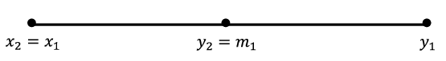

Section 10.1 Completeness of the Real Number System
Recall that in deriving the Lagrange and Cauchy forms of the remainder for Taylor series, we made use of the Extreme Value Theorem (
EVT) and Intermediate Value Theorem (
IVT). In
Chapter 9, we produced an analytic definition of continuity that we can use to prove these theorems. To provide the rest of the necessary tools we need to explore the make-up of the real number system. To illustrate what we mean, suppose that we only used the rational number system. We could still use our definition of continuity and could still consider continuous functions such as
\(f(x)=x^2\text{.}\) Notice that
\(2\) is a value that lies between
\(f(1)=1\) and
\(f(2)=4\text{.}\)
The IVT says that somewhere between \(1\) and \(2\text{,}\) \(f\) must take on the value \(2\text{.}\) That is, there must exist some number \(c\in[1,2]\) such that \(f(c)=2\text{.}\) You might say, “Big deal! Everyone knows \(c=\sqrt{2}\) works.”
However, we are only working with rational numbers and
\(\sqrt{2}\) \(\)is not rational. As we saw in
Chapter 3 the rational number system has holes in it, whereas the real number system doesn’t. Again, “Big deal! Let’s just say that the real number system contains (square) roots.”
This sounds reasonable and it actually works for square roots, but consider the function \(f(x)=x-\cos x\text{.}\) We know this is a continuous function. We also know that \(f(0)=-1\) and \(f(\frac{\pi}{2})=\frac{\pi}{2}\text{.}\) According to the IVT, there should be some number \(c\in[\,0,\frac{\pi}{2}]\text{,}\) where \(f(c)=0\text{.}\) The graph is below.
The situation is not as transparent as before. What would this mysterious \(c\) be where the curve crosses the \(x\) axis? Somehow we need to convey the idea that the real number system is a continuum. That is, it has no “holes” in it.
How about this? Why don’t we just say that it has no holes in it? Sometimes the simple answer works best! But not in this case. How are we going to formulate a rigorous proof based on this statement? Just like with convergence and continuity, what we need is a rigorous way to convey this idea that the real number system does not have any holes, that it is complete.
We will see that there are several different, but equivalent ways to convey this notion of completeness. We will explore some of them in this chapter. For now we adopt the following as our Completeness Axiom for the real number system.
Axiom 10.1.1. Nested Interval Property of the Real Number System (NIP).
Suppose we have two sequences of real numbers \(\left(x_n\right)\)and \(\left(y_n\right)\) satisfying the following conditions:
\(x_1\leq x_2\leq x_3\leq\ldots\) (this says that the sequence, \(\left(x_n\right)\text{,}\) is non-decreasing)
\(y_1\geq y_2\geq y_3\geq\ldots\) (this says that the sequence, \(\left(y_n\right)\text{,}\) is non-increasing)
\(\forall\) \(n\text{,}\) \(x_n\leq y_n\)
\(\displaystyle \lim_{n\rightarrow\infty}\left(y_n-x_n\right)=0\)
Then there exists a unique number \(c\) such that \(x_n\leq
c\leq y_n\) for all \(n\text{.}\)
Geometrically, we have the following situation.
Notice that we have two sequences \(\left(x_n\right)\) and \(\left(y_n\right)\text{,}\) one increasing (really non-decreasing) and one decreasing (non-increasing). These sequences do not pass each other. In fact, the following is true:
Problem 10.1.2.
Let \((x_n), (y_n)\) be sequences as in the NIP. Show that for all \(n, m \in\NN\text{,}\) \(x_n\le y_m\text{.}\)
They are also coming together in the sense that \(\lim_{n\rightarrow\infty}\left(y_n-x_n\right)=0\text{.}\) The NIP says that in this case there is a unique real number \(c\) in the middle of all of this \(x_n\leq c\leq y_n\) for all \(n\in\NN\text{.}\)
If there was no such \(c\) then there would be a hole where these two sequences come together. The NIP guarantees that there is no such hole. We do not need to prove this since an axiom is, by definition, a self evident truth. We are taking it on faith that the real number system obeys this law. The next problem shows that the completeness property distinguishes the real number system from the rational number system.
Problem 10.1.3.
(a)
Find two sequences of rational numbers \(\left(x_n\right)\)and \(\left(y_n\right)\) which satisfy properties 1-4 of the NIP and such that there is no rational number \(c\) satisfying the conclusion of the NIP.
Hint.Consider the decimal expansion of an irrational number.
(b)
Find two sequences of rational numbers \(\left(x_n\right)\) and \(\left(y_n\right)\) which satisfy properties 1-4 of the NIP and such that there is a rational number \(c\) satisfying the conclusion of the NIP.
You might find the name “Nested Interval Property” to be somewhat curious. One way to think about this property is to consider that we have a sequence of “nested closed intervals” \([\,x_1,y_1]\supseteq[\,x_2,y_2]\supseteq[\,x_3,y_3]\supseteq\cdots\) whose lengths \(\,y_n-x_n\) are “shrinking to \(0\text{.}\)” The conclusion is that the intersection of these intervals is non-empty and, in fact, consists of a single point. That is, \(\bigcap_{n=1}^\infty[x_n,y_n]=\{c\}\text{.}\)
It appears that the sequences \(\left(x_n\right)\) and \(\left(y_n\right)\) in the NIP converge to \(c\text{.}\) This is, in fact, true and can be proven rigorously. In what follows, this will prove to be a valuable piece of information.
Theorem 10.1.4.
Suppose that we have two sequences \(\left(x_n\right)\) and \(\left(y_n\right)\) satisfying all of the assumptions of the Nested Interval Property. If \(c\) is the unique number such that \(x_n\leq c\leq y_n\) for all \(n\text{,}\) then \(\lim_{n\rightarrow\infty}x_n=c\) and \(\lim_{n\rightarrow\infty}y_n=c\text{.}\)
Problem 10.1.5.
To illustrate the idea that the NIP “plugs the holes” in the real line, we will prove the existence of square roots of nonnegative real numbers.
Theorem 10.1.6.
Suppose \(a\in\mathbb{R},\,a\geq 0\text{.}\) There exists a real number \(c\geq 0\) such that \(c^2=a\text{.}\)
Notice that we can’t just say, “Let \(c=\sqrt{a}\text{,}\)” since the idea is to show that this square root exists. In fact, throughout this proof, we cannot really use a square root symbol as we haven’t yet proved that they (square roots) exist. We will give the idea behind the proof as it illustrates how the NIP is used.
Sketch of Proof.
Our strategy is to construct two sequences which will “narrow in” on the number \(c\) that we seek. With that in mind, we need to find a number \(x_1\) such that \(x_1^2\leq a\) and a number \(y_1\) such that \(y_1^2\geq a\text{.}\) (Remember that we can’t say \(\sqrt{x_1}\) or\(\sqrt{y_1}\text{.}\)) There are many possibilities, but how about \(x_1=0\) and \(y_1=a+1?\) You can check that these will satisfy \(x_1^2\leq a\leq\) \(y_1^2\text{.}\) Furthermore \(x_1\leq y_1\text{.}\) This is the starting point.
The technique we will employ is often called a bisection technique, and is a useful way to set ourselves up for applying the NIP. Let \(m_1\) be the midpoint of the interval \([\,x_1,y_1]\text{.}\) Then either we have \(m_1^2\leq a\) or \(m_1^2\geq a\text{.}\) In the case \(m_1^2\leq a\text{,}\) we really want \(m_1\) to take the place of \(x_1\) since it is larger than \(\,x_1\text{,}\) but still represents an underestimate for what would be the square root of \(a\text{.}\) This thinking prompts the following move. If \(m_1^2\leq a\text{,}\) we will relabel things by letting \(x_2=m_1\) and \(y_2=y_1\text{.}\) The situation looks like this on the number line.
In the other case where \(a\leq m_1^2\text{,}\) we will relabel things by letting \(x_2=x_1\) and \(y_2=m_1\text{.}\) The situation looks like this on the number line.

In either case, we’ve reduced the length of the interval where the square root lies to half the size it was before. Stated in more specific terms, in either case we have the same results:
\begin{equation*}
x_1\leq x_2\leq y_2\leq y_1;\ \ x_1^2\leq a\leq y_1^2;\ \ x_2^2\leq a\leq y_2^2
\end{equation*}
and
\begin{equation*}
y_2-x_2=\frac{1}{2}\left(y_1-x_1\right)\text{.}
\end{equation*}
Now we play the same game, but instead we start with the interval \([x_2,y_2]\text{.}\) Let \(m_2\) be the midpoint of \([x_2,y_2]\text{.}\) Then we have \(m_2^2\leq a\) or \(m_2^2\geq a\text{.}\) If \(m_2^2\leq a\text{,}\) we relabel \(x_3=m_2\) and \(y_3=y_2\text{.}\) If \(a\leq m_2^2\text{,}\) we relabel \(x_3=x_2\) and \(y_3=m_2\text{.}\) In either case, we end up with
\begin{equation*}
x_1\leq x_2\leq x_3\leq y_3\leq y_2\leq y_1;\ \ x_1^2\leq a\leq y_1^2;\ \ x_2^2\leq a\leq y_2^2;\ \ x_3^2\leq a\leq y_3^2
\end{equation*}
and
\begin{equation*}
y_3-x_3=\frac{1}{2}\left(y_2-x_2\right)=\frac{1}{2^2}\left(y_1-x_1\right)\text{.}
\end{equation*}
Continuing in this manner, we will produce two sequences, \(\left(x_n\right)\)and \(\left(y_n\right)\) satisfying the following conditions:
\(\displaystyle x_1\leq x_2\leq x_3\leq\ldots\)
\(\displaystyle y_1\geq y_2\geq y_3\geq\ldots\)
\(\forall\) \(n\text{,}\) \(x_n\leq y_n\)
\(\displaystyle \lim_{n\rightarrow\infty}\left(y_n-x_n\right)=\,\lim_{n\rightarrow\infty}\frac{1}{2^{n-1}}\left(y_1-x_1\right)=0\)
These sequences also satisfy the following property:
\begin{equation*}
\forall n,\,x_n^2\leq a\leq y_n^2
\end{equation*}
Properties 1-4 tell us that \(\left(x_n\right)\)and \(\left(y_n\right)\) satisfy all of the conditions of the NIP, so we can conclude that there must exist a real number \(c\) such that \(x_n\leq c\leq y_n\) for all \(n\text{.}\) At this point, you should be able to use property 5. to show that \(c^2=a\) as desired.
Problem 10.1.7.
The bisection method we employed in the proof of
Theorem 10.1.6 is pretty typical of how we will use the NIP, as taking midpoints ensures that we will create a sequence of “nested intervals.” We will employ this strategy in the proofs of the IVT and EVT. Deciding how to relabel the endpoints of our intervals will be determined by what we want to do with these two sequences of real numbers. This will typically lead to a fifth property, which will be crucial in proving that the
\(c\) guaranteed by the NIP does what we want it to do. Specifically, in the above example, we always wanted our candidate for
\(\sqrt{a}\) to be in the interval
\([\,x_n,y_n]\text{.}\) This judicious choice led to the extra Property 5:
\(\forall\) \(n,\,x_n^2\leq a\leq y_n^2\text{.}\) In applying the NIP to prove the IVT and EVT, we will find that properties 1-4 will stay the same. Property 5 is what will change based on the property we want
\(c\) to have.
Before we tackle the IVT and EVT, let’s use the NIP to address an interesting question about the Harmonic Series. Recall that the Harmonic Series, \(1+\frac{1}{2}+\frac{1}{3}+\frac{1}{4}+\cdots\text{,}\) grows without bound, that is, \(\sum_{n=1}^\infty\frac{1}{n}=\infty\text{.}\) The question is how slowly does this series grow? For example, how many terms would it take before the series surpasses 100? 1000? 10000? Leonhard Euler decided to tackle this problem in the following way. Euler decided to consider the \(\lim_{n\rightarrow\infty}\left(\left(1+\frac{1}{2}+\frac{1}{3}+\cdots+
\frac{1}{n}\right)-\text{ ln } \left(n+1\right)\right)\text{.}\) This limit is called Euler’s constant and is denoted by \(\gamma\text{.}\) This says that for \(n\) large, we have \(1+\frac{1}{2}+\frac{1}{3}+\cdots+\frac{1}{n}\approx\)ln\(\left(n+1\right)+\gamma\text{.}\) If we could approximate \(\gamma\text{,}\) then we could replace the inequality \(1+\frac{1}{2}+\frac{1}{3}+\cdots+\frac{1}{n}\geq
100\) with the more tractable inequality ln\(\left(n+1\right)+\gamma\) \(\geq 0\) and solve for \(n\) in this. This should tell us roughly how many terms would need to be added in the Harmonic Series to surpass 100. Approximating \(\gamma\) with a computer is not too bad. We could make \(n\) as large as we wish in \(\left(1+\frac{1}{2}+\frac{1}{3}+\cdots+\frac{1}{n}\right)-\)ln\(\left(1+n\right)\) to make closer approximations for \(\gamma\text{.}\) The real issue is, HOW DO WE KNOW THAT
\begin{equation*}
\lim_{n\rightarrow\infty}\left(\left(1+\frac{1}{2}+\frac{1}{3}+\cdots+\frac{1}{n}\right)-\text{ ln } \left(\text{n} +1\right)\right)
\end{equation*}
ACTUALLY EXISTS?
You might want to say that obviously it should, but let us point out that as of the printing of this book (2013), it is not even known if \(\gamma\) is rational or irrational. So, in our opinion the existence of this limit is not so obvious. This is where the NIP will come into play; we will use it to show that this limit, in fact, exists. The details are in the following problem.
Problem 10.1.8.
The purpose of this problem is to show that
\begin{equation*}
\lim_{n\rightarrow\infty}\left(\left(1+\frac{1}{2}+\frac{1}{3}+\cdots+ \frac{1}{n}\right)-\ln\left(n+1\right)\right)
\end{equation*}
exists.
(a)
Let \(x_n=\left(1+\frac{1}{2}+\frac{1}{3}+\cdots+\frac{1}{n}\right)-\ln\left(n+1 \right)\text{.}\) Use the following diagram to show
\begin{equation*}
x_1\leq x_2\leq x_3\leq\cdots
\end{equation*}
(b)
Let \(z_n=\ln\left(n+1\right)-\left(\frac{1}{2}+\frac{1}{3}+\cdots+\frac{1}{n+1} \right)\text{.}\) Use a similar diagram to show that \(z_1\leq z_2\leq z_3\leq\cdots\text{.}\)
(c)
Let \(y_n=1-z_n\text{.}\) Show that \(\left(x_n\right)\) and \(\left(y_n\right)\) satisfy the hypotheses of the nested interval property and use the NIP to conclude that there is a real number \(\gamma\) such that \(x_n\leq\gamma\leq
y_n\) for all \(n\text{.}\)
(d)
Conclude that \(\lim_{n\rightarrow\infty}\left(\left(1+\frac{1}{2}+\frac{1}{3}+\cdots+
\frac{1}{n}\right)-\ln\left(n+1\right)\right)=\gamma\text{.}\)
Problem 10.1.9.
Use the fact that \(x_n\leq\gamma\leq y_n\) for all \(n\) to approximate \(\gamma\) to three decimal places.
Problem 10.1.10.
(a)
Use the fact that for large \(n\text{,}\) \(1+\frac{1}{2}+\frac{1}{3}+\cdots+\frac{1}{n}\approx
\ln\left(n+1\right)+ \gamma\) to determine approximately how large \(n\) must be to make
\begin{equation*}
1+\frac{1}{2}+\frac{1}{3}+\cdots+\frac{1}{n}\geq 100\text{.}
\end{equation*}
(b)
Suppose we have a supercomputer which can add 10 trillion terms of the Harmonic Series per second. Approximately how many earth lifetimes would it take for this computer to sum the Harmonic Series until it surpasses 100?